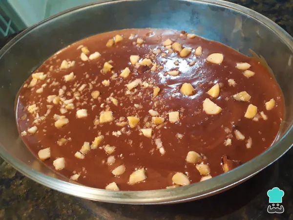

sobremesa
Ingredientes
- Uma caixa de leite condensado
- 200 milimitros de leite
- 1 de ovo
- 1 colher de sopa de amido de Milho (maisena)
- 100 gramas de castanha triturada
- 100 gramas de chocolate ao leite
- 100 gramas de chocolate meio amargo
- 1 caixa de creme de leite
Modo de Fazer
- Comece por preparar o creme de castanhas. Junte em uma panela o leite condensado, o leite, o amido de milho, e a gema peneirada, mexa bem até ficar bem homogêneo. Leve ao fogo baixo e continue mexendo sem parar com um fouet, até virar um creme consistente.
- Passe as castanhas pelo processador até ficar como se fosse uma farofinha. Eu usei a castanha do pará, mas você pode utilizar amêndoas, nozes, castanha de caju, etc. Em seguida, misture as castanhas trituradas no creme branco.
- Para a ganache de chocolate basta derreter os chocolates (ao leite e meio amargo) já picados de 30 em 30 segundos no microondas ou no banho maria. Depois de derretido, junte o creme de leite e misture bem.
- Para a montagem: Em uma travessa de vidro espalhe o creme de castanha e cubra com a ganache. Para decorar, você pode usar castanhas grosseiramente picadas. Leve para gelar por, no mínimo, 2 horas e meia.
- Depois desse tempo está prontinho seu delicioso ovo de Páscoa na travessa! Sirva para todos nessa ocasião especial e tenho a certeza que vão gostar. Bom apetite e diga nos comentários o que você achou.
